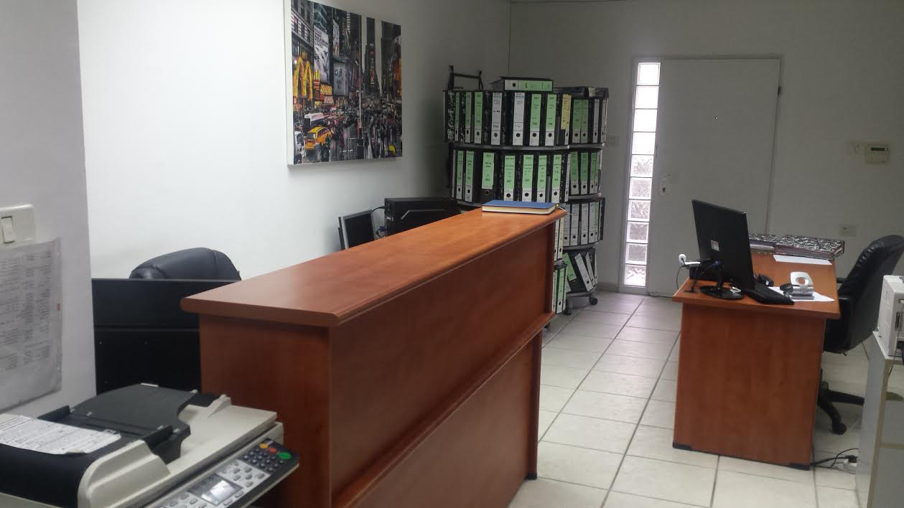

שירותי המשרד
ביקורת ועריכת דוחות כספיים מבוקרים לחברות פרטיות, עמותות, מלכ"רים, ביקורת מטעם משרד הפנים על דיווחי רשויות מקומיות.
הכנת דיווחים שוטפים למע"מ, מס הכנסה, ביטוח לאומי.
הנה"ח לחברות ועצמאים, הקמת מערכת הנה"ח לעסקים חדשים.
פתיחת תיקים לעצמאים וחברות במס הכנסה, מע"מ, ביטוח לאומי.
הכנת דוחות שנתיים ותקופתיים לרשויות המס. דוחות של חברות, שותפויות, עצמאים, דוחות שכירים להחזר.
יצוג בדיונים על דוחות שנתיים בפני רשויות המס – מס הכנסה, מיסוי מקרקעין, מס ערך מוסף, ביטוח לאומי.
הכנת הצהרות הון למס הכנסה.
הכנת תלושי משכורת, הדרכה בהכנת תלושים לעמידה בדיני העבודה השונים.
הכנת דוחות שנתיים של עמותות לרשם העמותות .
ליווי עסקים בתחילת הדרך, בדיקת כדאיות רכישת עסק, הערכות שווי.
הכנת תכניות עיסקיות להגשה לבנקים, מוסדות מממנים.
הכנת חוות דעת מומחה לבתי משפט.
גישור.
|

|